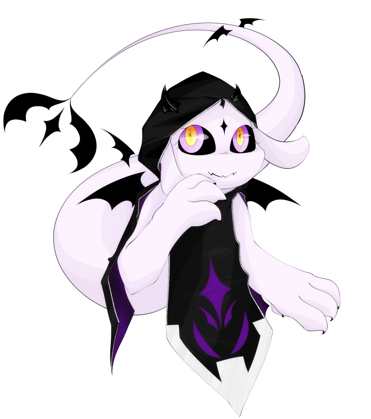

| 아실라 Ashilla |
|
|  | |
| 별칭 | 아실라, 애쉬 |
| 나이 | (졸업 기준) 19세 |
| 종족 | 수호룡 |
| Sex / Gender | 여성 / 시스젠더 |
| 직업 | 고요의 숲 수호자 |
| 키 / 몸길이 | 약 2m / 약 8m |
| 몸무게 | 146kg |
| 생일 | 1월 26일 |
FNI
1. 외형
털도, 비늘도 없는 매끈한 피부는 살짝 연보라색이 도는 새하얀 색이며, 뱀 같은 파충류를 연상시킨다. 동그란 머리의 정 중앙에는 까만 별 모양의
표식이 하나 자리하고 있다. 표식을 기준으로 양 옆에는 귀처럼 보이는 더듬이가 한 쌍, 그 바로 위에는 까만 뿔이 두 쌍, 그리고 표식 바로 위에도 뿔이
한 개 돋아나있다. 뿔은 만져보면 딱딱하며 매끄러워서 빛도 곧잘 반사한다. 유리구슬 같은 영롱하고 맑은 눈은 꽤나 크며, 언제나 주위의 풍경을 살피며
반짝인다. 항상 꾹 다물려져 있는 균열 형태의 입 속에는 의외로 검고 뾰족한 송곳니가 자리하고 있다.
날카롭고 까만 발톱이 자라난 네 갈래의 손가락, 그리고 그것들이 자리한 한 쌍의 팔은 살짝 잔근육이 비친다. 뿔과 세트 마냥 잘 어울리는
까만 날개는 여타 드래곤들의 것과 유사하며, 총 세 쌍이 등 부분을 따라 크게 펼쳐져 있다.
재학 중에는 흑마학과 특유의 교복을 항상 착용하고 있었다. 뿔과 날개가 거슬리는지 해당 부위들에 직접 구멍을 뚫어 드러나게 개조했다.
졸업한 이후에도 후드 형태의 교복이 마음에 들었던 건지, 외출 시에 가끔 착용한다. 아니면 목을 보호하기에 알맞은 형형색색의 스카프나 목도리를
둘렀다. 마을을 돌아다니다가 마음에 들고 넉넉한 크기의 옷을 발견하면 그때 그때 구매하여 입는다.
2. 성격
[ 친절한 ]
-
" 안녕, 안녕! 아실라의 장기를 보여줄까? 너를 돕는 일을 말이지! "
[ 활발 ]
-
" 그러니까 아실라는, 음, 친구랑 친해지고 싶어! "
[ 동경하는 ]
-
" 우리의 미래를 상상해보면 두근대지 않니~? "
3-1. 호불호
야채를 좋아한다. 보통 드래곤들의 식성은 잡식이거나 육식성인 경우가 많으나 생물에게 친절한 아실라의 천성 때문인지, 아니면 단순한 기호의
문제인지, 그는 채식을 선호한다. 비건이라는 타이틀을 걸 정도로 고기를 아예 먹지 않는 것은 아니다. 다만 과일과 야채를 주식으로 삼고 육류의 경우,
생물의 알, 물고기, 고기의 순서대로 선호하지 않았다. 친구나 가족이 육류를 권한다면 가볍게 거절한 뒤 계속 권유한다면 그제서야 먹을 것이다.
그 나름대로의 타협점을 찾은 듯.
생크림 과일 케이크를 매우 좋아한다. 가족들과 사이가 좋았던 당시, 모든 기념일의 선물로 생크림 과일 케이크만을 요구할 정도로 좋아하는
음식이다. 유명 브랜드의 과일 케이크를 사먹기 위한 저금통이 따로 있을 정도로 집착이 심하다. 직접 베이킹을 해서 만들어보고 싶어하지만, 그의 요리 실력이
좋은 편이 아니라 번번히 가족들의 반대로 실패했다.
자유롭게 여행 다니는 것을 좋아한다. 그가 특히나 좋아하는 장소는 눈이 많이 쌓인 곳, 싱그러운 숲, 그리고 빛나는 생물들로 채워진 바다.
아름다운 풍경들을 보고싶다는 욕구와 가족과의 절연 시기가 겹친 덕분에, 졸업하자마자 여행을 떠날 수 있었다. 숲의 관리자로서 채용되어 정착하기 전에
2년 정도 세상을 떠돌아다니며 여행하였다.
작고 부드러운 동물을 정말 좋아한다. 특히 그것의 털을 쓰다듬는 것을 좋아한다. 북실북실할수록, 부드러울수록, 푹신할수록
좋아하며 한 번 쓰다듬기 시작하면 손을 떼지 못한다. 귀엽고 신기한 생물은 보는 것만으로도 매우 좋아하며 친구로 삼고싶어한다.
자신을 구속하고 틀에 정해진 미래를 강요한 가족들을 정말 싫어한다. 3학년 방학 즈음에 갈등이 고조되어, 집을 박차고 나올
계획을 짜기 시작했다. 4학년, 5학년 시기 동안 얌전히 돈을 모으다가 졸업하자마자 가출에 성공하였다. 가출해서 여행하는 동안, 그리고 정착한 그 이후에도
가족들과의 교류는 일체도 하고있지 않다.
가족 이외에도 자신의 가치관을 강요하고 그를 구속하려 드는 사람이 있다면, 무조건적으로 혐오 할 것이다.
3-2. 취미
여행 이외의 취미로는, 여러 생물들을 소환하고 길들이는 것을 즐기고 있다. 소환술을 꽤나 연마하여 이제는 원하는 대상을 어느 정도 지정하여 소환해낼 수 있고, 그 과정에서 만난 다른 생물들과 깊게 교류하고 있다. 소환해낸 생물들 중 지능이 높고 순한 생물들과 계약을 맺어 소환수로 부리거나 간단한 일을 시키고 있다. 이는 단순히 업무나 공부로서가 아닌, 진정한 그의 취미 활동이 되었다.
3-3. 직업
떠돌아다니는 여행가 겸 백수...
일 뻔 했으나 여행 도중에 만난 학창 시절 친구에게 고용되어 수호자로서 일하고 있다. 정확히는 고요의 숲 관리를 돕는 일인데,
원래대로라면 했을 일, 즉 수호룡 가문의 숲을 수호하는 일과 비슷한 일을 맡게 된 것에 오묘한 기분이 드는 듯 하다. 물론 자신이 좋아하는 사람과
함께 원하는 장소에서 스스로 선택한 일을 하고 있기 때문에 만족도는 꽤나 높다.
주로 숲의 분쟁 해결, 숲 보호, 고요 지키기, 고요 놀리기 등의 일을 하고 있지만 빈둥거리거나 노는 시간이 대부분이다.
3-4. 귀여운 친구들
소환하거나 사역하는 친구들, 보통 '아실라의 귀여운 친구들!'이라고 지칭한다.
북실이 - 80cm 정도 되는 크기에, 짙은 남색의 얼룩무늬 깃털과 네 개의 발을 가진 사역마이다. 얌전한 성격에, 추우면 털을 잔뜩
부풀린다. 마법학교에 입학할 때 받은 정육면체 형태의 알에서 태어났다. 힘은 약하지만 온순하며 그를 매우 잘 따른다. 100년 이상 장수 할 경우
'생명의 마물'로 성장한다는데...
돌멩이 - 소환수도 사역마도 아니지만 귀여운 친구다. 손바닥에 안정적으로 잡히는 정도 크기의 동그란 회색 돌이다. 아실라의
가족들이 반려동물을 키우지 못하게 하는 대신 그에게 준 친구이다. 평범한 돌멩이에 마법으로 간단한 AI를 부여했다. 소중하게 대해주면 가끔
색이 바뀌거나 겉이 부드러워지는 등 반응을 보인다.
4. 기타
이동할때에는 항상 허공에 살짝 떠서 미끄러지듯 빠르게 이동한다. 그 모습은 마치 유영하는 바다뱀처럼 보인다.
길이와 몸집이 꽤나 커져 평상시에 편하게 움직이기가 힘들어져서, 스스로에게 축소화 마법을 걸 때가 많다. 숲이나 아무도 없는 곳에
있을 때에는 평상시 모습으로 있지만, 시내로 나가거나 사람들을 만날 때에는 2m 정도의 길이를 유지하도록 축소한다.
 고요 - 소중한 친구! 와 동시에 고용주. 숲에서 일하며 신세를 지고 있다.
고요 - 소중한 친구! 와 동시에 고용주. 숲에서 일하며 신세를 지고 있다.